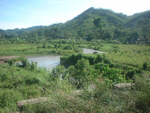

Simud 
/simud/
prop_n.
“Simud_river”
prop_n.
the river which runs through the Sinuda barangay. As a result, many Matigsalugs call the barangay by this name.
Wrd.Gloss: Sinuda_barangay
Online dict status: -
Usage level: M
Updated by: RJH
Last updated: 13/Oct/2009
"Simud" in reader "Hendei si Lita?"
"Simud" in text "Dreaming of being Rich"
"Simud" in text "Dreaming of being Rich"
"Simud" in text "Dreaming of being Rich"
"Simud" in text "Dreaming of being Rich"
"Simud" in text "Eg-untud te diip"
"Simud" in text "Due daruwan lukes ne nekegsinug-ung diye te dalan"
This page last updated: 19/May/2012
Copyright © 2009-2010, Matigsalug Language Christian Association, Inc